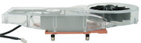

{kind=link}
It was intended to be a Gaming (powerful) HTPC (quiet) machine. I am very happy with the results.
Pictures of the assembled machine.
The prices are from newegg.com. zipzoomfly.com has also been good for checking prices and availability.
I have found SilentPCReview.com very useful.
SPCR thread discussing this system
| 12v amps | ||||
|---|---|---|---|---|
| $383.00 | video | ASUS EN7800GT/2DHTV/256M Geforce 7800GT 256MB (dual DVI) | 16a, 56.7w | |
|  | $30.99 | video cooling | Arctic Cooling NV Silencer 5 REV 3 (comes w/ compound) | |
| $322 | cpu | Athlon 64 x2 3800+ Manchester, socket 939 | ||
 |
$39.99 | cpu cooling | Scythe Ninja CPU Cooler SCNJ-1000 ("Thermal grease included") "The cooling performance of the Ninja Scythe is the best we've reviewed." - SilentPCReview.com, 6/17/05 |
|
| $5.99 | thermal compound |
Arctic Silver 5 Thermal Compound, 3.5 grams (for CPU heatsink) "the price is ok... cuz 3.5 grams can be used in 15-20 cpus." - icemanleo on newegg, 12/27/05 |
||
| $236 | ram | Corsair Twinx2048-3200c2pt (@ 2-3-3-6) (2gb total) "Absolutely the best set of memory sticks out there for current motherboards." - Tungsten on newegg, 12/23/05 |
||
| $124.99 | case | Antec P180 case | ||
| $163 | motherboard | Asus A8N-SLI Premium faq |
||
| have ($101) |
hard drive | Western Digital WD2500JB 250gb UATA100, purchased 6/27/03 | 0.530 | |
| $3.50 | Athena Power 4pin (P4ATX-12V Male) to 4pin (P4ATX-12V Female) Extension Cable | |||
| $7.49 | NEC Black Floppy Drive | |||
| have ($65) |
power supply | PC Power & Cooling Silencer 360 ATX | 21 | |
| have ($459.99) |
monitor | Viewsonic G220fb 21" CRT, 59.4 lbs. | ||
| have ($17.99) |
nic | linksys etherfast 10/100 nic (lne100tx) | ||
| have | sound | sblive value sound card | ||
| have ($38.99) |
dvdr | NEC ND-3520A BK DVDR | ||
| $12.99 | keyboard | Rosewill RK500 Black USB? Something plain and black that feels nice, with "\" to the right of "]" not to the left of backspace. |
||
| ? ($9.95) |
mouse | May stick with my old trusty logitech optical, may get a razer. | ||
| $1329.94 ($2022.86) |
Subtotal | |||
| $64.74 | Newegg Shipping | |||
| $18.24 | case fan | Nexus 120mm Real Silent case fan (black and white) | ||
| $6.33 | HeatsinkFactory shipping |
|||
| 1419.25 (2112.17) |
Total |
{kind=link}
{kind=link}
{kind=link}
{kind=link}
{kind=link}
{kind=link}
{kind=link}
{kind=link}
{kind=link}
{kind=link}
I like AMD, I like their Athlons, the Athlon 64's seem like a good idea. I am particularly interested in their Quiet 'n' Cool feature (and a motherboard that supports it). Also, AMD has been kicking Intel's ass.
Nvidia vs. ATI graphics?
I prefer Nvidia over ATI for numerous reasons including Linux support. I want SLI support because I think there is a reasonable possibility it will be a useful upgrade path, which basically means I want a nforce4 sli northbridge. And similar to Intel vs. AMD, Nvidia has been consistantly ahead of ATI.
Update 2010-11: I don't think anyone ever actually uses SLI (nVidia) or Crossfire (AMD/ATI) as an upgrade path.
Which Nvidia?
I don't want to spend the money on a nvidia's top of the line 7800gtx nvidia card, and the performance of the 7800gt is decent, although still expensive.
Which motherboard and graphics card manufacturer?
I have been very fond of Asus motherboards forever. I think getting a motherboard and video card with matching manufacturers and chip manufacturers makes sense, hence getting asus motherboard and video card both with nvidia chips. This means an Asus A8N-SLI motherboard. The standard doesn't support Quiet 'n' Cool. For that I have to spend $41 more for the A8N-SLI Premium or wait for the currently unavailable A8N-SLI SE. The northbridge heatpipe on the Premium is sexy.
"The Premium is an updated version of the deluxe with alot more upgrades and errors fixed." - a8n-sli premium faq
Socket 939 is the latest, most future proof, and what all the stuff I like uses.
RAM?
A lot of people have had problems with less than great ram (with asus nforce4 motherboards), and the Corsair Twinx2048-3200c2pt is most highly recommended. I'd prefer mushkin purple, but haven't found it (it has occurred in purple in "2 x 512MB of Mushkin Level II Dual Pack PC3200 RAM @ 2-3-3-6")
{kind=link}
Ultra makes purple heat spreaders, $2 each
Graphics cooling?
Current Geforce video cards are known to be noisy. The Arctic Cooling NV Silencer 5 REV 3 is highly recommended because it reduces the gpu temperature significantly, is a lot quieter, and vents directly out of the case.
Case & CPU heatsink?
The Antec P180 case seems to be the quietest case that isn't over $1k (zalman), and it's handling of thermal issues seems well thought out. I figure all the fans I'll use will be 1 or 2 of the top case fans (on low) and the video card fan. The power supply will cool the hard drives. The case fans will only have the cpu left to cool, and I figure some ducting around the massive ninja heatsink should drop the temp some and be fine with no cpu fan (I've seen confirmation). All rear vent holes (around the PS and video card) will be sealed with hvac tape.
What's this about "reports of slight case issues (the warping/bent doors)"?
Power extension cord
This combination of case and MB tends to have problems with the 4-pin power cord reaching, so I'll get an extension cord (and should di-electric grease it).
Floppy
The faq recommends upgrading the MB bios via a boot floppy first, so I'll get a floppy drive.
Which AMD CPU?
The Athlon 64 part is obvious. The 3200 winchester ($190) seems to fall in a nice place on a price per performance graph, but with everything else top of the line that would be my bottleneck, so I should probably go higher. bored2sleep has recommended the x2 3800+, which is $322. At the moment I want the 3800+ venice because it's 116% as fast as the x2 3800+ for single threaded apps, and cheaper.
"spend the extra 20 bucks and get the dual core 3800+, the performance difference is wonderful (you'll really notice it even with small things like playing music while surfing the net). While the single core one is faster in sheer benchmarks and games, you'll notice the dual core's benefits more (its perceptively faster)" - teknerd, so I'm back to the x2.
According to Tom's Hardware's most excellent charts, there are 4 socket 939 CPUs faster than the 3800 Venice (the rest are Socket 754 or Intel). Here are their newegg prices, and speed as a percentage of the 3800+ Venice using winrar:
| cost | % cost | minutes elapsed | % speed | CPU |
|---|---|---|---|---|
| $282 | 100.0% | 1.667 | 100.0% | 3800+ Venice |
| $787 | 297.1% | 1.633 | 102.1% | x2 4800+ |
| $334 | 118.4% | 1.583 | 105.3% | 4000+ San Diego |
| $811 | 287.6% | 1.500 | 111.1% | FX55 San Diego |
| $1011 | 358.5% | 1.433 | 116.3% | FX57 San Diego |
While I don't intend to overclock, NeoSeeker's article on the 4000+ San Diego has me comfortable going with the 3800+ due to its headroom.
teknerd on SPCR has convinced me that a x2 3800+ would be noticeably better than a 3800+ Venice, so I'm going with it. Also, it seems like games are not likely to be CPU bound on an x2 3800+ until after the dual cores are better supported. (article about games not being cpu bound, and Doom 4 and Serious Sam 2 support dual cores)
Hard drive?
I was going to get a western digital WD3200KS 320gb SATA2 drive until a tom's hardware article pointed out to me that SATA2 drives aren't faster than UATA100. So instead I'll get the SATA1 twin to my Western Digital WD2500JB 250GB UATA100 drive and raid1 / stripe them. 500gb, with performance that should kill any single drive available. And $99 instead of $156. But will they be too noisy?
The nforce4 northbridge comes with raid 0/1/0+1.
I've had enough people discourage me from doing RAID1 due to concern for instability of the raid controller (although I don't think specifically with this northbridge). So I'll at least hold off on the second drive for a bit. (thanks to Talorc on SPCR)
"the hard drive choices are fine." - teknerd on SPCR
Power supply?
I would prefer to have a Antec NeoHE 430, but I already have the (noisier) PC Power & Cooling Silent 360, and SilentPCReview's article states that "all of our test systems could easily be handled by a 300W power supply that conforms to ATX12V v2.xx." The 7800GT does not draw significantly more than the tested 6800GT, and the PCP&C silent 360 puts out as many 12v amps as the well liked and ATX12V v2.0 compliant Seasonic S12-330. This would leave the PCP&C as the least worthy component of the system, but I don't think that alone justifies an upgrade - I don't think the noise level will bother me.
I know about the problems with the NeoHE and would be willing to RMA it if I got one that didn't work.
"the PC P&C 360 should be fine." - stupid on SPCR
Thermal Compound
Arctic Silver 5 has been the choice of thermal compound for attaching heatsinks for years. I was thinking about just using the goop that comes with the vga cooler and heatsink I'm getting, but I've read of several people regretting they didn't pick up the AS5 for the same equipment.
"i put arctic silver on my htpc cpu and it went from 150[F] down to 94[F]" - bitbyte, #htpc, efnet, 12/29/05
I believe my athlon 1400 cooked itself to death due to the stock thermal tape drying out over 4 years. I plan to reapply thermal goop every 2 years.
Case Fan
I successfully set the machine up with the only fans being the NV Silencer on the video card and a single (the smallest) stock 120mm case fan in the back, ducted over the CPU heatsink (with no fan of its own). But I was very disapointed that the stock fans can only be powered by molex connectors, not standard motherboard connectors. So I picked up the Nexus 120mm, hooked it to my motherboard, enabled Q-Fan2 (dynamic fan speed control based on CPU temperature, an Asus motherboard feature) and Quiet 'n Cool (dynamic underclocking based on load, an Athlon 64 feature supported by my motherboard).
Poorly organized notes
I want a motherboard without a northbridge fan, but I believe that can be nicely achieved with a zalman northbridge heatsink on any mb with a fan, but I have a feeling it won't fit with an AC VGA silencer on a A8N-SLI based on some pictures. But not voiding a motherboard's warranty is nice.The $379 eVGA SLI motherboard and Geforce 7800GT combo is an interesting cheaper possibility. The mb is apparently a rebadged jetaway which has gotten extremely impressive reviews. It has a far more elegant method of switching between a single video card and SLI than anything else - 3 dedicated slots. Use the middle one for 1 card, and the outside 2 for SLI. This apparently improves overclocking potential as well. This will be copied by everyone. But it doesn't support Quiet 'n' Cool.
http://www.overclockers.co.uk/acatalog/ASUS_Socket_939.html and http://www.scan.co.uk/Products/ProductInfo.asp?WebProductID=311465 claim to have the A8N-SLI SE in stock.
Problem with Dual Core processors, is their price exceeds their value.
Take the Athlon X2 3800+ for example, the "budget dual core", running at 2.0 GHz/512 kB makes this basically, two Athlon 64 3200+. For single threaded applications you'll see only minor performance improvements over the 3200+, and even in highly optimized conditions, you may see only 50% boost.
For the same money you could get, what, an Athlon 64 4000+? Although with the Dual Core, you get a better multitasking experience, and it makes up for many of the architectural weaknesses of the Athlon 64 architecture, when push comes to shove, the faster single core will consistently bring home the bacon.
- Lord of fools, http://www.itsallpc.co.uk/index.php?topic=388
The 3500 is simply a higher clocked 3000 or 3200. Therefore, it is not significantly faster than the 3200.
The 3700 has 1M of L2 cache, as opposed to the 3000, 3200, or 3500, which have 512K. Therefore, you will see a significant performance increase going that route. The 3500 is $20 less than a 3700. So go 3200, or 3700.
- heropsycho2177, http://www.computing.net/gaming/wwwboard/forum/5924.html
"What would you guys say was the highest safe reasonable temp for a Evga 7800GT? Under full load, of course." - videogames101
"I wouldn't be worried until about 85°C, although it probably won't ever get that hot. They run cooler than the 6800 series." - CalvinHobbes
http://forums.anandtech.com/messageview.aspx?catid=31&threadid=1765775&enterthread=y
Links
AMD's recommended motherboards, searchable by feature certification
SilentPCReview - total power consumption of current PCs (223w max)
power consumption of geforce 6800
power consumption of geforce 7800
Antec Neo HE 430 power supply
sexy purple mushkin ram
nice shot of an AC VGA silencer
p180 / 7800GT / x2 4800+ / A8N32-SLI / ninja system pics
nice article on diy heatpipe cooling
nice prebuit gaming machines from monarch
acoustifan quiet fan mounts
Nexus 120mm case fans are most highly recommended
comparison of 3 7800GT's (evga, xfx, asus): games recommended for putting a 7800GT to good use: "Call of Duty 2, Battlefield 2, Black and White 2, Quake 4, F.E.A.R, etc."
comparison of thermal compounds
"This card (eVGA 7800GT 256-P2-N518) has no performance diffrence over the N515, and is only $xx more because of the motherboard deal. Luckily I bought it when it was $xxx though. Works great in SLI with my N515 and the motherboard it came with. Had to upgrade my PSU." - Joebot on newegg, 12/23/05
"The difference between this model (N518) and other models such as N515-N517 is the BIOS versions. If you look up community support at EVGA.com there are many people having issues with previous models. Artifacting, heat issues, clock issues, using older drivers to be stable, etc., and require GPU BIOS flashing which is provided by EVGA engineers. Not sure if that voids warranty or not if flash goes wrong. Also seems like the BIOS update flashing aren't 100% guranteed to fix the technical issues owners are having as many of them note. I'd play it safe and spend a little more on this model with latest BIOS or other brand models. Probably the reason why there's a gap in the pricing of the same videocard." - n/a on newegg, 12/2/05
Logitech Precision PC Gaming Headset
Razer mouse
cpu chart: http://www.tomshardware.com/2005/11/21/the_mother_of_all_cpu_charts_2005/page24.html
"Avoid Creative's buggy overpriced soundcards Get a Revolution 5.1 from M Audio,way nicer." - unknown, 1/2/06
http://www.almico.com/speedfan.php
"Everytime GPU temp goes above 43, fan ramps up. When the temp drops, fan slows down. No more manual work. This is magic. I love it." using speedfan, - http://forums.silentpcreview.com/viewtopic.php?t=25023
"CPU temperature shot up to 74°C, where throttling kicked in to prevent the temperature from rising any higher." - http://www.silentpcreview.com/article255-page6.html
"With the CPU under load, the temperature stabilized at 65°C \u2014 warm, but not high enough to start throttling." rear fan on low, top fan removed but open - http://www.silentpcreview.com/article255-page6.html
"According the NVidia driver, the GPU core can hit 127°C before it throttles itself back" minor graphics glitches at 69°C (6800GT) - http://www.silentpcreview.com/article255-page7.html
when applying silicone:
"Smooth after application (within 3 to 5 minutes) before skin formation by using a flat, wet instrument or finger - applying a little dishwashing liquid prevents sticking to skin." - http://www.bostik.co.za/sealants/home.htm
"the disk drive running at 45C (or even 50 or 60) should not crash the PC." "Most hard drives operating temps are 0-60°C." - http://www.silentpcreview.com/forums/viewtopic.php?t=28337
"If you believe your CPU temperature is too high (say 70C or above)" - http://www.quietpc.com/uk/amdcooling.php